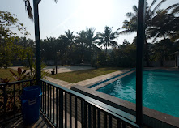

🏊
Swimming Pool
Clean private pool zone for relaxed family pool days, birthday dips and sunny weekend plans.
- Pool-side seating
- Kid-friendly picnic mood
- Great for photos and reels


A relaxed farmhouse and farm-stay space in Bandh, Santa Cruz — made for pool afternoons, birthdays on the lawn, family picnics, quiet stays, and those slow Goan evenings where the air smells faintly of wet earth and something good from the kitchen.

Dove Nest is designed around comfort, open air, water, greenery and easy celebrations. Simple to reach, quiet once you enter.
Clean private pool zone for relaxed family pool days, birthday dips and sunny weekend plans.
A quiet farmhouse feeling with room to breathe, sit, eat, talk and slow down.
Birthdays, picnic groups, small celebrations, pool parties and casual family occasions.

This is the sort of place that works for both noisy birthdays and quiet Sunday escapes. Arrive with your people, carry your plans lightly, and let the day become its own thing.


Send a quick enquiry on WhatsApp with your preferred date, guest count and occasion.